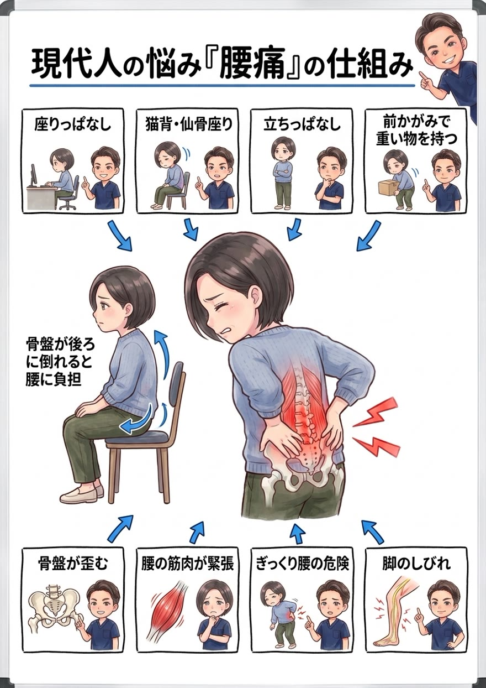

湿布・コルセット・痛み止めでごまかす毎日、そろそろ卒業しませんか。腰痛の多くは「腰そのもの」ではなく「土台の骨盤」に原因があります。なぜ繰り返すのか、筋肉と骨盤のレベルまで解説します。

腰は、上半身の重さを受け止めながら、立つ・座る・かがむ・ひねる、あらゆる動きの中心になる場所です。その腰を支える土台が骨盤。この骨盤が前後に傾いたり左右にねじれたりすると、腰まわりの筋肉の“一部だけ”に負担が集中し続けます。
特に多いのが、骨盤が後ろに倒れた「仙骨座り」。この姿勢では、立っているときの約1.4倍もの負担が腰の椎間板にかかるといわれます。デスクワークで1日8時間この姿勢を続ければ、腰が悲鳴を上げるのも当然です。

つまり慢性腰痛の正体は、「骨盤の歪み × 長時間の同じ姿勢 × 支える筋力の低下」の掛け算。痛む場所だけを揉んだり湿布を貼ったりしても、この掛け算が残っている限り、痛みは必ず戻ってきます。

「腰に良い座り方を意識して」——よく言われます。でも、考えてみてください。意識しただけで、筋肉はつくでしょうか？ 意識しただけで、痩せられるでしょうか？ 腰痛もこれと同じで、残念ながら、意識だけでは良くならないんです。決してあなたの努力が足りないわけではありません。
意識して良い姿勢で座れるのは、その瞬間だけ。歪んだ骨盤と、負担が集中する筋肉のクセをそのままにして、意識だけで腰を守り続けるのは、誰にとってもとても難しいことなんです。
では、どうすればいいのか。答えはひとつです。体の仕組みと原因を突き止め、その体に合った具体的な施術と姿勢改善メニューを「継続」する。これに尽きます。 ダイエットが食事メニューの継続で、トレーニングが筋トレメニューの継続で結果を出すのと、まったく同じ。意識やその場しのぎではなく、原因に合った正しいことを、続ける——それだけが、腰痛から本当に卒業する道です。
正直にお話しします。原因である骨盤や体幹へのアプローチは、必ずしも“気持ちいい場所”への施術ではありません。でもそれこそが、繰り返す腰痛を根本から変えるために本当に必要な一手です。とはいえ、今つらい腰の張りや痛みを我慢してもらうつもりはありません。「今のつらさへの対応」と「原因への一手」を、必ずセットで行います。気持ちいいマッサージ“だけ”で終われば、それは対症療法。その場は楽でも、原因が残っている限りまた戻ってきてしまうからです。
原因は、あなたの体そのものではなくあなたの“生活”の中にあります。どんな椅子で、どんな座り方で、どれだけ運転して、どんな姿勢で物を持つか——この生活習慣そのものに、根本改善のカギがあります。だから当院は、症状だけでなくあなたの生活そのものをとことん深くお聞きし、原因が潜む習慣にメスを入れます。ここまで踏み込む接骨院・整体は多くありません。これが当院の考える“本当の根本治療”です。
ボキボキが苦手・怖い方へ。刺激の少ないやさしい矯正で、無理なく整えます。お子さまやご年配の方にも安心です。
「ボキボキしてスッキリしたい」「あの爽快感が好き」という方へ。しっかり音の鳴るダイナミックな矯正も、当院の得意技です。
「ボキボキしてくれる整体を探していた」という方も、ぜひご相談ください。ご希望とお身体の状態に合わせて、最適な方をお選びいただけます。
今つらい腰まわり・お尻の筋肉の緊張を丁寧に緩め、「今のつらさ」を軽くします。
骨盤矯正で傾き・ねじれを整え、腰の一部に負担が集中しない身体へ。負担が分散すれば、痛みは出にくくなります。
ここを整えることが、再発を防ぐいちばんのカギ。椅子の高さ、正しい座り方、物の持ち方、体幹のセルフケアまで、あなたの生活に合わせて具体的にお伝えし、継続をサポートします。

いつ・どんな動きで痛むのか、お仕事や生活スタイルまで丁寧にヒアリング。痛みの出方から原因のあたりをつけます。

骨盤の傾き・ねじれ、股関節の硬さ、体幹の使い方をチェック。「なぜあなたの腰が痛くなるのか」を目で見てわかる形でご説明します。

緊張した筋肉をゆるめ、骨盤矯正で土台から整えます。正しい座り方・ご自宅でのセルフケアまでセットでお伝えします。
緊張した腰の筋肉を一時的にゆるめても、腰に負担を集中させている原因＝骨盤の傾き・ねじれや座り方のクセが残っているからです。原因がある限りまた戻ります。当院は土台の骨盤から整えるので戻りにくいのが特徴です。
ぎっくり腰のような急性の腰痛は健康保険の対象になる場合があります。長年の慢性腰痛は自費メニュー（骨盤矯正等）でのご案内です。カウンセリングで状態を確認してご説明します。
はい。ボキボキしないソフト矯正と、しっかり音の鳴るダイナミック矯正（ボキボキ）の両方をご用意しています。苦手な方はソフト矯正で無理なく整えますのでご安心ください。
痛みが強い時期のサポートには有効ですが、長期間頼ると体幹の筋力が落ちて慢性化しやすくなります。当院では卒業のタイミングまで含めてアドバイスします。